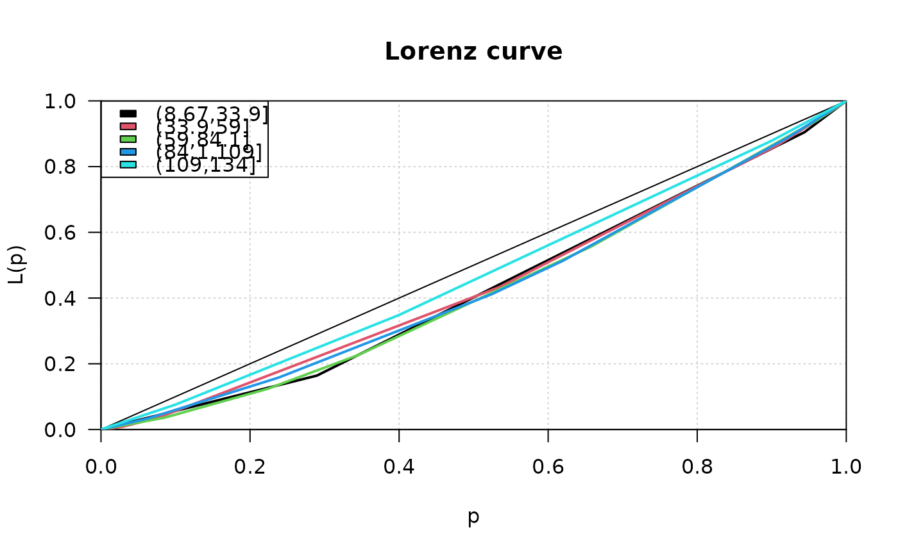

Lorenz Curve
Lc.RdLc computes the (empirical) ordinary and generalized Lorenz curve of a vector x. Desc calculates some key figures for a Lorenz curve and produces a quick description.
Lc(x, ...) # S3 method for default Lc(x, n = rep(1, length(x)), na.rm = FALSE, ...) # S3 method for formula Lc(formula, data, subset, na.action, ...) # S3 method for Lc plot(x, general = FALSE, lwd = 2, type = "l", xlab = "p", ylab = "L(p)", main = "Lorenz curve", las = 1, pch = NA, ...) # S3 method for Lclist plot(x, col = 1, lwd = 2, lty = 1, main = "Lorenz curve", xlab = "p", ylab = "L(p)", ...) # S3 method for Lc lines(x, general = FALSE, lwd = 2, conf.level = NA, args.cband = NULL, ...) # S3 method for Lc predict(object, newdata, conf.level=NA, general=FALSE, n=1000, ...)
Arguments
| x | a vector containing non-negative elements, or a Lc-object for plot and lines. |
|---|---|
| n | a vector of frequencies, must be same length as |
| na.rm | logical. Should missing values be removed? Defaults to FALSE. |
| general | logical. If |
| col | color of the curve |
| lwd | the linewidth of the curve |
| lty | the linetype of the curve |
| type | type of the plot, default is line ( |
| xlab, ylab | label of the x-, resp. y-axis. |
| pch | the point character (default is |
| main | main title of the plot. |
| las | las of the axis. |
| formula | a formula of the form |
| data | an optional matrix or data frame (or similar: see |
| subset | an optional vector specifying a subset of observations to be used. |
| na.action | a function which indicates what should happen when the data contain NAs. Defaults to |
| conf.level | confidence level for the bootstrap confidence interval. Set this to |
| args.cband | list of arguments for the confidence band, such as color or border (see |
| object | object of class inheriting from "Lc" |
| newdata | an optional vector of percentages p for which to predict. If omitted, the original values of the object are used. |
| ... | further argument to be passed to methods. |
Details
Lc(x) computes the empirical ordinary Lorenz curve of x
as well as the generalized Lorenz curve (= ordinary Lorenz curve *
mean(x)). The result can be interpreted like this: p*100 percent
have L(p)*100 percent of x.
If n is changed to anything but the default x is
interpreted as a vector of class means and n as a vector of
class frequencies: in this case Lc will compute the minimal
Lorenz curve (= no inequality within each group).
Value
A list of class "Lc" with the following components:
vector of percentages
vector with values of the ordinary Lorenz curve
vector with values of the generalized Lorenz curve
the original x values (needed for computing confidence intervals)
the original n values
Note
These functions were previously published as Lc() in the ineq package and have been
integrated here without logical changes.
References
Arnold, B. C. (1987) Majorization and the Lorenz Order: A Brief Introduction, Springer
Cowell, F. A. (2000) Measurement of Inequality in Atkinson, A. B. / Bourguignon, F. (Eds): Handbook of Income Distribution. Amsterdam.
Cowell, F. A. (1995) Measuring Inequality Harvester Wheatshef: Prentice Hall.
See also
The original location Lc(),
inequality measures Gini(), Atkinson()
Examples
priceCarpenter <- d.pizza$price[d.pizza$driver=="Carpenter"] priceMiller <- d.pizza$price[d.pizza$driver=="Miller"] # compute the Lorenz curves Lc.p <- Lc(priceCarpenter, na.rm=TRUE) Lc.u <- Lc(priceMiller, na.rm=TRUE) plot(Lc.p)# inequality measures emphasize these results, e.g. Atkinson's measure Atkinson(priceCarpenter, na.rm=TRUE)#> [1] 0.05286775#> [1] 0.04893621# income distribution of the USA in 1968 (in 10 classes) # x vector of class means, n vector of class frequencies x <- c(541, 1463, 2445, 3438, 4437, 5401, 6392, 8304, 11904, 22261) n <- c(482, 825, 722, 690, 661, 760, 745, 2140, 1911, 1024) # compute minimal Lorenz curve (= no inequality in each group) Lc.min <- Lc(x, n=n) plot(Lc.min)# input of frequency tables with midpoints of classes fl <- c(2.5,7.5,15,35,75,150) # midpoints n <- c(25,13,10,5,5,2) # frequencies plot(Lc(fl, n), # Lorenz-Curve panel.first=grid(10, 10), main="Lorenzcurve Farmers", xlab="Percent farmers (cumulative)", ylab="Percent of area (%)" )# add confidence band lines(Lc(fl, n), conf.level=0.95, args.cband=list(col=SetAlpha(DescToolsOptions("col")[2], 0.3)))#> [1] 0.6678112# get interpolated function value at p=0.55 y0 <- predict(lx, newdata=0.55) abline(v=0.55, h=y0$L, lty="dotted")# and for the inverse question use approx y0 <- approx(x=lx$L, y=lx$p, xout=0.6) abline(h=0.6, v=y0$y, col="red")# input of frequency tables with midpoints of classes fl <- c(2.5,7.5,15,35,75,150) # midpoints n <- c(25,13,10,5,5,2) # frequencies # the formula interface for Lc lst <- Lc(count ~ cut(price, breaks=5), data=d.pizza) plot(lst, col=1:length(lst), panel.first=grid(), lwd=2)#> ------------------------------------------------------------------------------ #> lx (list) #> #> $xname #> [1] "lx" #> #> $label #> NULL #> #> $class #> [1] "list" #> #> $classlabel #> [1] "list" #> #> $length #> [1] 6 #> #> $n #> [1] 6 #> #> $NAs #> [1] 0 #> #> $main #> [1] "lx (list)" #> #> [[9]] #> [1] "unhandled class" #>